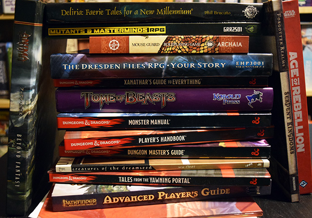

Tabletop Roleplaying Games are a long time passion of mine, not just playing them but also in the capacity of running them, and more recently getting into the realm of working on developing a new and relatively in depth system. For those unfamiliar with tabletop rpgs, the general premise is that you have a group of people with one being the GM or Game Master though the term used by different systems varies. The GM is in charge of most of the aspects of the game's world, planning out the locations the players will visit, events they will experience, monsters they'll face, npcs (non-player characters) they will meet and interact with, and pretty much everything else regarding the story and world save for one important aspect, the player characters. The exact group size varies, though often 4-6 players is the sweet spot on top of having the GM of course.
For players you have control of a single component, but an important one, your character designed within the bounds of whatever system of rules you are using and any additional restrictions or provisions set by the GM. Different people take different approaches when creating their characters, some opt for self-inserts typically without it being overly blatant, others create entirely original characters, some take heavy inspiration from their favourite characters, and some focus purely on the mechanical aspect initially (though ideally they develop the character more as things go). With that said however before you start creating characters, or planning an adventure you will need to pick out a system to use and there are plenty of options depending on what you want. You can opt for a system for virtually any genre you might want, there are those designed for a popular setting (often more than one), you have options which can be picked up with characters designed in minutes while others are lengthy tomes built more like textbooks that cover a range of mechanical minutia interspersed with in depth lore, some are incredibly focused in what they cover while others are intended to cover whatever is needed being perfectly fit to adapt to any genre the group has in mind, and of course you have systems which lean more towards a heavily story driven focus while others are geared more towards an emphasis on utilizing mechanics of the system.
Now that you have a group of players, a GM with a story in mind (or a prepublished adventure path), and a system you intend to use you're mostly good to go, but what else do you need? In part that depends on if you're playing in the classic face-to-face manner at a physical table, or if you're playing online whether with friends from the other side of town, or people from the other side of the world. If you're going for a traditional game you typically want scratch paper for taking notes, character sheets (typically filled out before the first session), something to write with, a set of dice (make sure they're easy to read and fit for whatever you're playing), and a copy of the books you're using whether physical or digital, the GM will also want to have their notes on hand. On top of this while not necessary things like a dry erase battle mat or more detailed maps, miniatures or pogs to represent characters and monsters, a GM screen for the GM, a dice tower, some atmospheric music selected, and maybe some manner of snacks and drinks, of course there are all sorts of other options and accesories but that covers the more common inclusions. If you're playing online you mainly just need pdfs of the books, ideally a means of talking over voice such as Discord or Skype, a computer with internet access (kind of a no brainer), and of course the client you're using whether it's Roll20, FantasyGrounds, Maptools, or another option which covers all your dice, map, sheet, and other assorted needs.
Now then, we've covered the general information about what tabletop rping is, and what one needs for it we have one other important aspect worth considering... Why in the world would anyone do it (And no just saying it's fun isn't a helpful answer)?
The answer varies depending on who you ask, though in my opinion it largely comes down to a desire both to tell stories and to be a part of them in some vaguely tangible manner. Hanging out with friends, talking and telling a story together, developing new in jokes and tales to retell, engaging in acting or roleplaying in its own right, and of course pulling off all sorts of crazy shit in character. It certainly isn't for everyone, but if you have a bit of patience, a solid imagination, and a love of fiction then you'll probably find some parts of it you love. At the end of the day though not every game will be the same given the variables included. The chemistry of the players, skill and creativity of the GM, resources at hands, the system you're using, what genre you're playing and the story being told, and of course individual preferences. Some people may enjoy a four hour session that is just roleplaying without ever drawing a blade or firing a bullet, whereas others might prefer that most sessions end with a pile of bodies after multiple detailed fights, and in general most tend to prefer a mix. With that said though I definitely urge anyone interested to give it a try, whether by participating at a local cards and comic type store that hosts events or has a looking for group posting, by checking online and finding a group to play with that way, or by just finding a few interested friends and getting together with whatever brave soul is willing to try GMing for the first time (if you are a first time GM my advice is pick a simple system, and consider using an adventure path).
